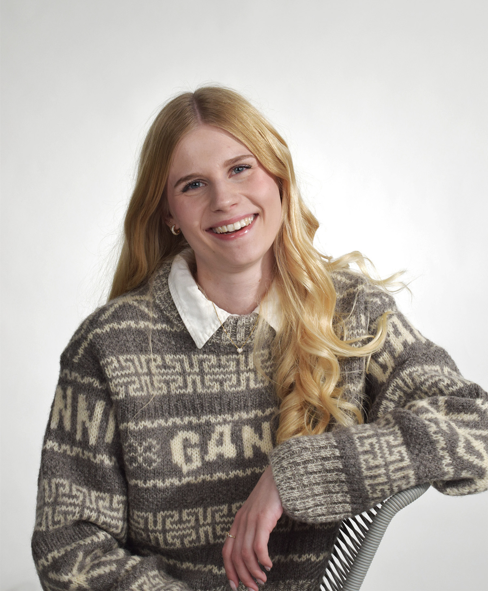

Hvem er jeg?
Mit navn er Anna, jeg er 22 år gammel og er født og opvokset i Århus. Min interesse for grafisk design og programmering startede helt fra da jeg var 12 år gammel, og fandt ud af at jeg kunne programmere mine egne hjemmesider ved hjælp af HTML og Css. Siden da er min interesse for digitalt design kun blevet større, og jeg elsker nu at lege med de forskellige Adobe programmer, udvikle visuelle identiteter, webdesign og content creation, både i form af fotografi og video.